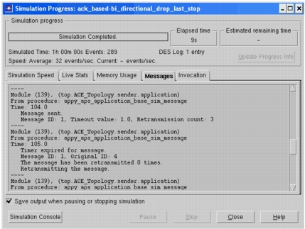

Viewing Drop Response Behavior During a Discrete Event Simulation When running a simulation that invokes UDP Drop Response behavior, you can view log messages about the actions taken. These messages appear in the Messages tabbed page of the Simulation Progress dialog box (or in the OPNET Debugger console). The following figure shows information generated when messages are sent and retransmitted: time, message ID, and some configuration details. Note—These messages are generated only if the UDP Drop Response attribute “Print Debug Information” is set to 1 on the connection used by the packet. Figure 28-6 Viewing Trace Output for a Custom UDP Drop Response Algorithm 